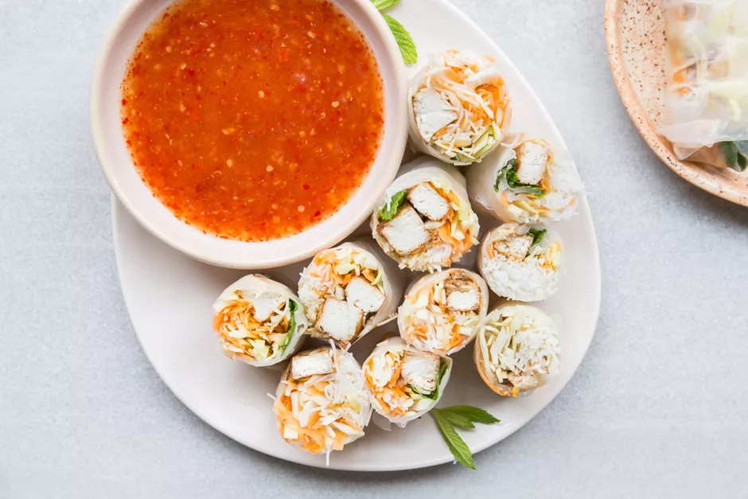
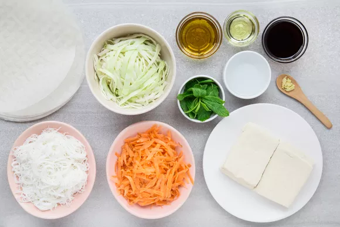
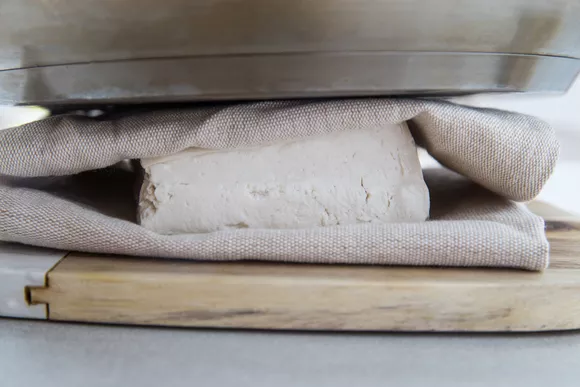
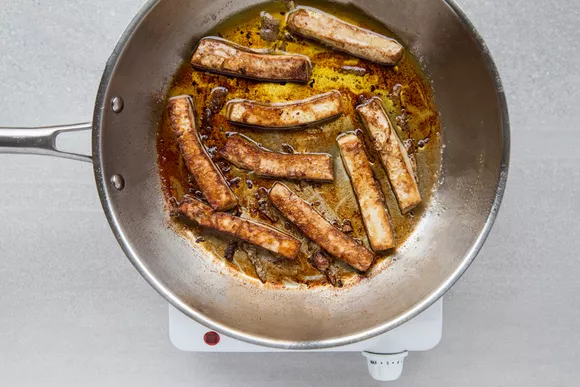
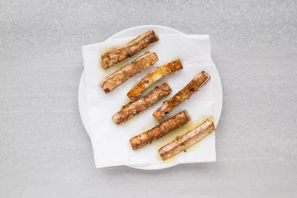
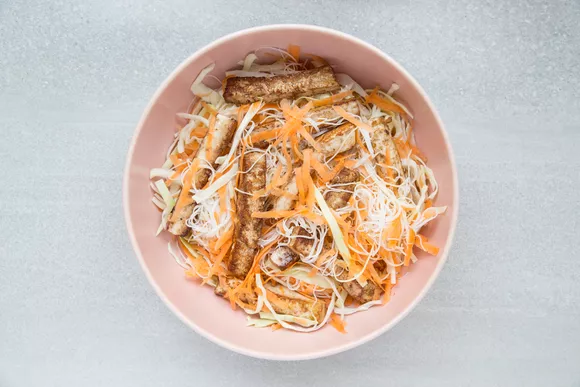
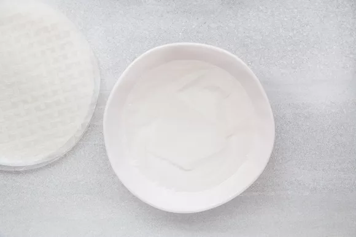
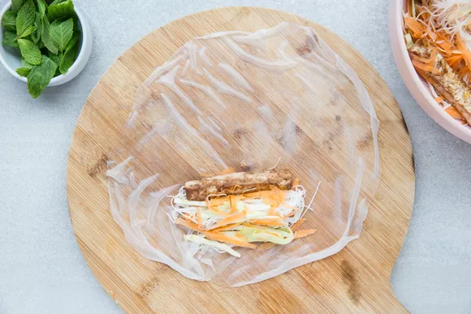
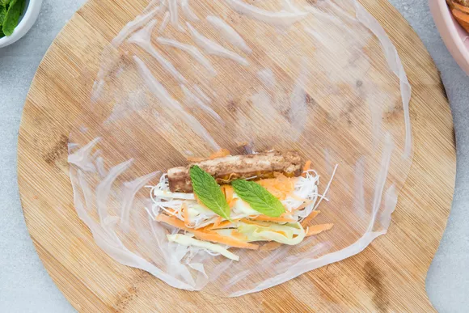
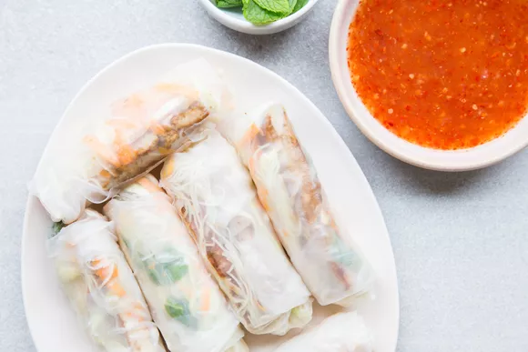

Vegan Tofu Spring Rolls

If you like fresh, healthy Thai- or Vietnamese-inspired spring rolls, try this easy recipe for vegetarian and vegan tofu spring rolls. They're filled with tofu, crunchy fresh vegetables, and bean thread noodles. You could use basil, cilantro, or a combination of whatever fresh herbs you have on hand instead of the fresh mint.
Never made spring rolls at home before? No need to be intimidated: It's easier than you think. The rice paper wrappers just need a quick dunk in water, then you can add your ingredients and roll them up, burrito-style. They're delicious served with a spring roll dipping sauce or peanut sauce.
This tofu spring roll recipe is vegetarian and vegan and is easy to make gluten free—make sure you use bean thread or rice noodles and swap out the soy sauce for either a gluten-free tamari or nama shoyu (though it never hurts to check the ingredients list on your rice paper wrappers and your bean thread noodles to be 100 percent sure they are gluten free).
Ingredients
- 8 ounces tofu, firm or extra-firm, well-pressed
- 2 tablespoons soy sauce, or tamari or nama shoyu for gluten free
- 1 tablespoon olive oil
- 2 tablespoons sesame oil
- 1/2 teaspoon minced or grated fresh ginger
- 1/4 head green cabbage, sliced thin
- 4 large cloves garlic, finely minced
- 2 carrots, grated
- 1 cup cooked bean thread, or rice vermicelli, cooked according to package instructions, drained well
- 1 bunch fresh mint leaves
- 8 to 10 spring roll wrappers
Steps to Make It
- Gather the ingredients.

- First, prepare your tofu by pressing it well. Place tofu on a clean kitchen towel or paper towels, resting on a cutting board. Cover with a second towel and rest a heavy skillet or pot on top. Allow tofu to press for 30 minutes.

- Slice the pressed tofu into thin strips.

- Heat the soy sauce, olive oil, sesame oil, and ginger in a skillet and sauté the tofu for 5 to 7 minutes, just until lightly crisp.

- Remove the tofu from the pan and place on paper towels to allow to drain fully (you don't want any extra moisture in your tofu spring rolls)

- In a large bowl, toss together the tofu with the cabbage, carrots, and noodles.

- Submerge a spring roll wrapper in warm water in a shallow bowl until it starts to soften, 5 to 10 seconds, but isn't completely soft. It will continue to soften out of the water.

- Lay on a board and place 2 to 3 tablespoons of the tofu and veggie mixture on the wrapper, horizontally and just below the center line.

- Place 2 or 3 mint leaves on top of the filling and wrap your spring rolls by folding in the sides around the filling followed by the bottom. Roll tightly to the top of the paper and seal. Repeat with the remaining wrappers and filling.
